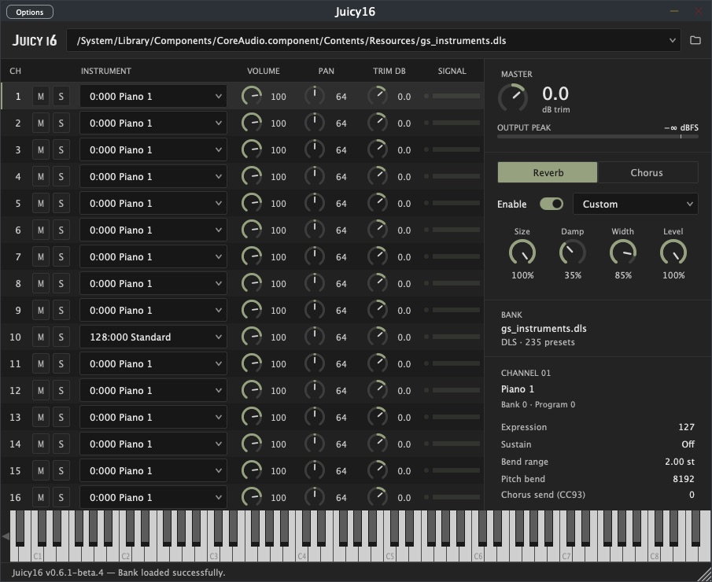

Juicy16
A free 16-channel SoundFont and DLS player for macOS, in AU and VST3. I built it to play multichannel game MIDI in my DAW without setting every patch by hand. Load one sound bank, send it MIDI, and let the file choose the instruments.
Download Beta 4
Free. AU and VST3 in one archive, with an installer.
0.6.1-beta.4 · 6.7 MB · September 6, 2026
What you need
- macOS 11 or later on an Apple Silicon Mac with a native Apple Silicon host. Intel Macs are not supported.
- A DAW that loads AU or VST3, plus your own DLS, SF2 or SF3 bank.
This beta is ad-hoc signed, not notarized. macOS may block the installer on first open. Windows is planned; there is no Windows download yet.

One bank, sixteen channels
The MIDI handles the patch changes. I can still adjust the mix.
- DLS, SF2 and SF3. One loaded file supplies the instruments for all sixteen channels.
- Automatic patch changes. Bank Select and Program Change messages choose each channel’s instrument, including changes mid-song.
- Hands-on control. Instrument selection, volume, pan, mute, solo and independent trim for each channel, plus master trim, reverb and chorus.
- One stereo output. Route the MIDI channels into one instance in your DAW. Juicy16 does not open or play MIDI files itself.
Beta 4 adds channel trim, signal meters, fallback-instrument details and per-channel vibrato strength in Settings → MIDI.
Get a MIDI playing
- Install the plugin. Unzip the download and open
install_macos.command. Choose AU, VST3 or both, then restart your DAW and rescan. The installation guide covers the macOS warning and manual setup. - Load the matching bank. Insert Juicy16 as an instrument and choose your DLS, SF2 or SF3 file. The sound bank supplies the samples; the MIDI supplies the notes.
- Keep the MIDI channels intact. Send channels 1–16 to that instance. If your DAW forces every part onto channel 1, the instruments will collide. Channel 10 defaults to GM percussion.
- Play from the beginning. Keep the file’s Bank Select, Program Change and controller events so its initial setup reaches the plugin.
Where Beta 4 stands
This is an experimental beta. The AU passes Apple’s validator, but fresh FL Studio/Cubase playback and save/reopen checks are still pending. Logic, macOS 11 itself and installation on another Mac remain unverified.
- Chorus is available and off by default. It follows the bank’s routing and MIDI CC93.
- Older plugin builds cannot open projects saved by Beta 4. Keep a separate project copy if you need to roll back.
- Audio timing, memory-leak checks and hosted CI still have unresolved issues. The release notes cover these limits.
I recommend testing with a copy of your project. Full release notes · Source on GitHub
Reporting a bug
Tell me your setup and the steps that reproduce it. If an instrument sounds wrong, include the MIDI channel and requested bank/program.
Report sent. I’ll follow up by email if I need more.